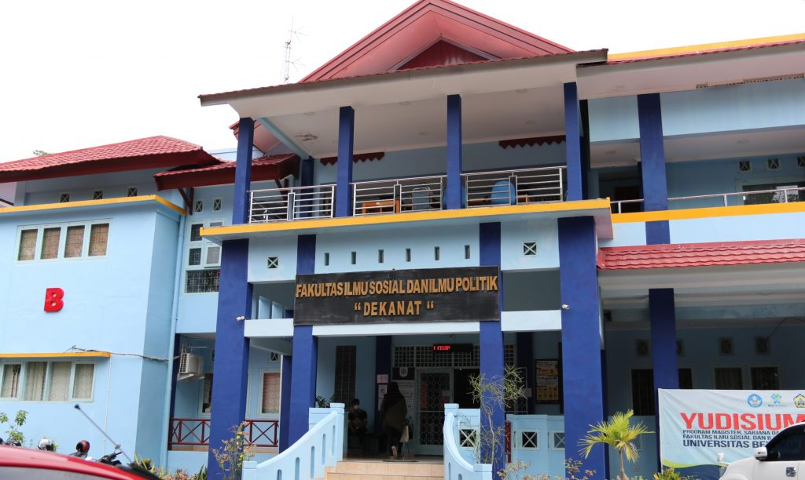

Selamat Datang di Universitas Bengkulu
Universitas Bengkulu (UNIB) didirikan pada tanggal 24 April 1982 berdasarkan Surat Keputusan Presiden Republik Indonesia No. 17 Tahun 1982. Pendirian universitas ini merupakan bagian dari upaya pemerintah untuk meningkatkan akses pendidikan tinggi di wilayah Bengkulu dan sekitarnya. Sejak berdirinya, Universitas Bengkulu terus berkembang dan bertransformasi menjadi pusat pendidikan tinggi terkemuka di Sumatera, dengan komitmen kuat untuk berkontribusi dalam pembangunan daerah dan nasional. Dengan berbagai program studi yang ditawarkan serta dukungan fasilitas modern, Universitas Bengkulu bertujuan untuk mencetak lulusan yang berkompeten dan siap bersaing di tingkat nasional maupun internasional.
Profil Universitas
Visi:
Universitas Bengkulu (UNIB) bertujuan menjadi universitas kelas
dunia pada tahun 2025, yang diakui secara internasional dalam bidang
pendidikan, penelitian, dan pengabdian masyarakat. UNIB bertekad
untuk mengembangkan pendidikan berkualitas tinggi, melakukan
penelitian yang inovatif dan relevan, serta aktif dalam pengabdian
masyarakat yang bermanfaat. Dengan komitmen ini, UNIB berupaya untuk
berkontribusi pada kemajuan ilmu pengetahuan serta pembangunan
nasional, mencetak lulusan yang berdaya saing global dan mampu
menjawab tantangan zaman.
Misi:
Universitas Bengkulu (UNIB) bertujuan menyediakan pendidikan yang
berkualitas tinggi dengan kurikulum yang relevan dan inovatif, serta
fokus pada pengembangan kompetensi mahasiswa melalui metode
pengajaran modern yang didukung oleh tenaga pengajar yang kompeten.
Selain itu, UNIB mendorong kegiatan penelitian yang inovatif dan
relevan dengan tantangan serta kebutuhan masyarakat. Universitas ini
juga aktif dalam kegiatan pengabdian masyarakat yang bertujuan untuk
meningkatkan kesejahteraan masyarakat, mendukung pembangunan daerah,
dan mengaplikasikan hasil penelitian secara praktis di lapangan.
Program Akademik
Fakultas Keguruan dan Ilmu Pendidikan
Fakultas Keguruan dan Ilmu Pendidikan UNIB menyediakan program studi sebagai berikut:
- Pendidikan Guru Sekolah Dasar
- Pendidikan Bahasa dan Sastra Indonesia
- Pendidikan Matematika
- Pendidikan Biologi
- Pendidikan Kimia
Fakultas Hukum
Fakultas Hukum UNIB menawarkan beberapa program studi yang meliputi:
- S1 Hukum
- Magister Hukum (S2)
- Doktor Hukum (S3)
Fakultas Ekonomi dan Bisnis
Fakultas Ekonomi dan Bisnis menawarkan berbagai program studi untuk mempersiapkan mahasiswa dalam dunia bisnis:
- Manajemen
- Akuntansi
- Ekonomi Pembangunan
- Ekonomi Syariah
Fakultas Pertanian
Fakultas Pertanian UNIB fokus pada pengembangan ilmu pertanian dengan berbagai program studi, antara lain:
- Agronomi
- Agribisnis
- Ilmu Tanah
- Peternakan
Fakultas Teknik
Fakultas Teknik UNIB menyediakan program studi untuk mempersiapkan mahasiswa dalam berbagai disiplin ilmu teknik, seperti:
- Teknik Mesin
- Teknik Elektro
- Teknik Sipil
- Informatika
- Sistem Informasi
- Arsitektur
Fakultas Matematika dan Ilmu Pengetahuan Alam
Fakultas Matematika dan Ilmu Pengetahuan Alam menawarkan berbagai program studi yang menggabungkan matematika dengan ilmu pengetahuan alam, termasuk:
- Matematika
- Fisika
- Biologi
- Kimia
Fakultas Ilmu Sosial dan Ilmu Politik
Fakultas Ilmu Sosial dan Ilmu Politik UNIB memiliki program studi untuk memahami dinamika sosial dan politik, termasuk:
- Ilmu Administrasi Negara
- Ilmu Komunikasi
- Ilmu Politik
- Antropologi
Fakultas Kedokteran dan Ilmu Kesehatan

Fakultas Kedokteran dan Ilmu Kesehatan UNIB menawarkan program studi untuk membentuk dokter dan tenaga kesehatan yang kompeten, seperti:
- Pendidikan Dokter
- Keperawatan
- Kesehatan Masyarakat
- Farmasi